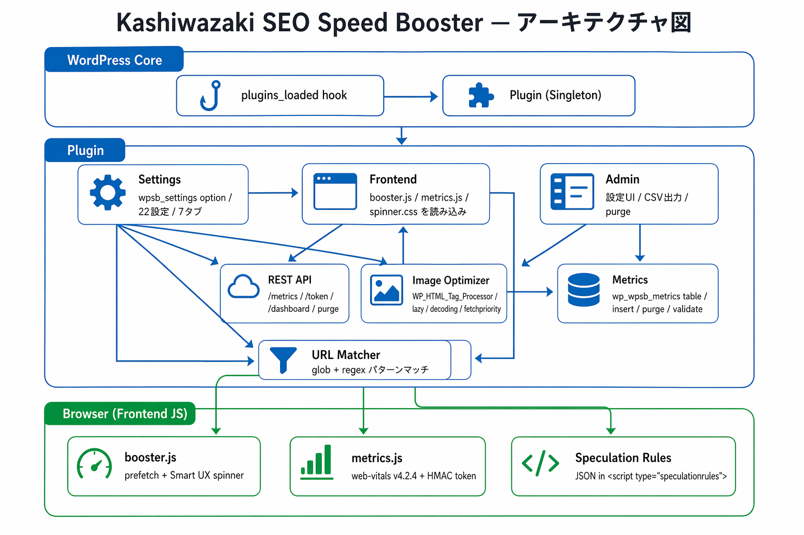

トラブルシューティング
よくある問題とその解決方法、動作要件、技術仕様をまとめています。
このページの内容
よくある問題と解決策
Q: プラグインを有効化しても何も変わらない
原因: 「一般設定」タブでプラグイン全体の有効化がオフになっている可能性があります。
解決策:
管理画面の左メニュー「Kashiwazaki SEO Speed Booster」→「一般設定」タブを開く
「プラグイン全体の有効化」チェックボックスをオンにする
使用したい機能の個別スイッチもオンにする
設定を保存する
ヒント
プラグイン全体の有効化は全機能のマスタースイッチです。これがオフだと個別機能がオンでも動作しません。
Q: Speculation Rules が動作しない
原因: ブラウザが Speculation Rules API に対応していない可能性があります。
解決策:
Chrome または Edge のバージョンが 109 以上であることを確認
ブラウザの DevTools で「Elements」タブを開き、<script type="speculationrules"> が出力されているか確認
「Speculation Rules を有効にする」と「事前レンダリング」または「事前プリフェッチ」がオンになっているか確認
ノート
Firefox や Safari では Speculation Rules API は動作しません。これらのブラウザでは予測プリフェッチ機能をご利用ください。
Q: 計測ダッシュボードにデータが表示されない
原因: 計測機能が有効化されていないか、データがまだ収集されていない可能性があります。
解決策:
「一般設定」で「計測を有効にする」がオンになっているか確認
フロントエンドページにアクセスし、ブラウザの DevTools の Network タブで /wp-json/wpsb/v1/metrics へのリクエストが送信されているか確認
レスポンスが 200 OK であることを確認（403 の場合は Same-Origin の問題、429 の場合はレート制限）
データベースに wp_wpsb_metrics テーブルが存在するか確認
ヒント
計測データが表示されるまで、実際のユーザーのアクセスが必要です。有効化直後は自分でサイトにアクセスしてデータを生成してください。
Q: Smart UX スピナーが表示されない
原因: 閾値以内にページが遷移している、または「予測プリフェッチ」が無効になっている可能性があります。
解決策:
「一般設定」タブで「予測プリフェッチを有効にする」がオンになっているか確認してください。Smart UX スピナーの JavaScript は予測プリフェッチと同じスクリプトに同梱されているため、予測プリフェッチが無効だとスピナーも動作しません。
閾値を 0ms に一時的に変更してテスト
外部サイトへのリンクではスピナーは動作しないことを確認
ブラウザの DevTools でスピナー用の CSS (spinner.css) が読み込まれているか確認
Q: 画像に loading="lazy" が二重に付与される
原因: テーマや他のプラグインが既に lazy loading を設定している可能性があります。
解決策:
- このプラグインは既に
loading属性が設定されている画像をスキップするため、通常は二重付与されません - 二重付与が発生する場合は、テーマ側の lazy loading を無効にするか、このプラグインの「遅延読み込み」をオフにしてください
ノート
WordPress 5.5 以降のコア lazy loading とは共存可能です。コアが付与した属性はスキップされます。
Q: 特定のページだけ最適化を無効にしたい
解決策:
- 「除外 URL」タブで該当ページのパスを除外パターンに追加
- glob パターン:
/target-page/* - 正規表現:
/^\/target-page\/.*/
Q: REST API のトークンエラー (403) が発生する
原因: Same-Origin チェックに失敗している可能性があります。
解決策:
サイトの URL 設定（「設定」→「一般」の WordPress アドレスとサイトアドレス）が正しいか確認
リバースプロキシやCDN経由でアクセスしている場合、Origin ヘッダーが正しく転送されているか確認
CORS 設定が正しいか確認
動作要件
| 項目 | 要件 |
|---|---|
| WordPress | 6.0 以上 |
| PHP | 8.1 以上 |
| ブラウザ（Speculation Rules） | Chrome 109+ / Edge 109+ |
| ブラウザ（その他の機能） | 全モダンブラウザ |
| JavaScript | 有効（フロントエンド機能に必要） |
| データベース | MySQL 5.7+ / MariaDB 10.3+（計測機能に必要） |
技術仕様
- プラグインバージョン: 1.0.0
- テキストドメイン:
kashiwazaki-seo-speed-booster - オプションキー:
wpsb_settings - データベーステーブル:
{prefix}_wpsb_metrics - REST API 名前空間:
wpsb/v1 - REST API エンドポイント:
/metrics(POST),/token(GET),/dashboard(GET),/purge(POST) - HMAC アルゴリズム: SHA-256
- トークンローテーション: 1時間
- レート制限: 20リクエスト / 90秒 (IPベース)
- ペイロード上限: 1KB
- 設定履歴: 最大100件
- 1ページビューあたりの送信数: 最大5件（フロントエンド制限）
- URL パス正規化: 最大255文字
- web-vitals.js バージョン: 4.2.4
- ライセンス: GPL-2.0-or-later
開発者向けフック
| フック名 | 種類 | 説明 |
|---|---|---|
wpsb_prefetch_enabled |
filter | リクエスト単位でプリフェッチを有効/無効 |
wpsb_exclude_url |
filter | URL の除外判定をカスタマイズ |
wpsb_normalize_path |
filter | メトリクスの URL パス正規化をカスタマイズ |
wpsb_metrics_data |
filter | メトリクス記録前のデータを加工 |
使用例
wpsb_prefetch_enabled
// 特定の条件でプリフェッチを無効化
add_filter( 'wpsb_prefetch_enabled', function( $enabled ) {
if ( is_user_logged_in() ) {
return false;
}
return $enabled;
});wpsb_exclude_url
// カスタム除外ルール
add_filter( 'wpsb_exclude_url', function( $excluded, $path, $patterns ) {
if ( strpos( $path, '/api/' ) === 0 ) {
return true;
}
return $excluded;
}, 10, 3 );アーキテクチャ
